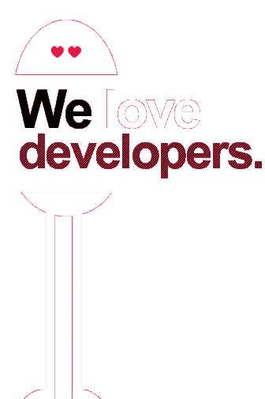

Hands-on Spring Boot
Prise en main de Spring Boot
Présentation
- Framework crée par Pivotal
- Première GA en Avril 2014
- 18 mois de développement
Concept
- Simplifier la création d'application Spring
- Améliorer la productivité
- Reduire la configuration
- Simplifier le déploiement
- Propsoser l'opinon Spring
Fonctionnalités
- Packaging en JAR ou WAR
- Des package "starters" permettant d'activer facilement des modules (db, mail, jpa, ...)
- Un mecannisme de conditionnement de bean
- Gestion des profiles et des properties
- Outillage (metriques et monitoring)
Modules
- logging (slf4j, logback, log4j2)
- data (jpa, es, mongo, solr, gemfire, redis)
- messaging (amqp, hornetq)
- templating (freemarker, thymeleaf, velocity)
- container (jetty, tomcat, undertow)
- web (spring-mvc, websocket, jersey, ws)
- mail
- ...
Démarrage
- CLI
- Ligne de commande, prototypage en groovy
- Maven
- Gradle
- http://start.spring.io
- Initialise un projet Spring Boot
- Choix des modules, de l'outil de build, version